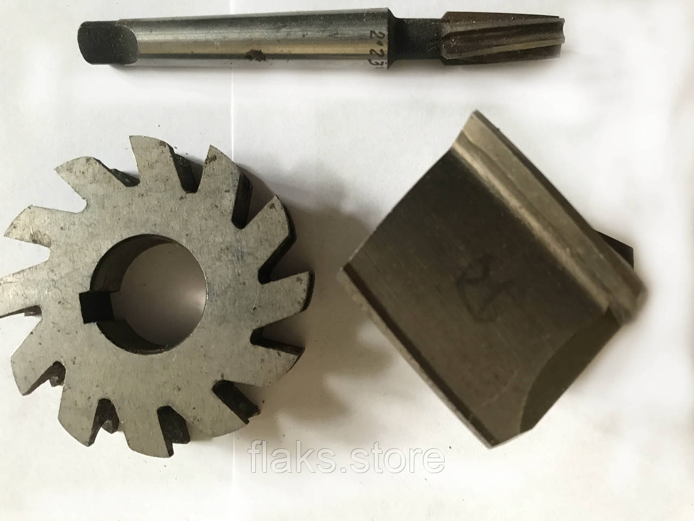

Розгортки, зенкери, зенківкиРазвертки, зенкера, зенковки
Розгортка машинна насадна ф 65 А3 суцільна гвинтовий зуб L=48х32 мм z14 Р6М5 ОршаРазвертка машинная насадная ф 65 А3 цельная винтовой зуб L=48х32 мм z14 Р6М5 Орша
ОписОписание
Розгортка машинна насадна ф 65 А3 суцільна гвинтовий зуб L=48х32 мм z14 Р6М5 Орша — професійний металорізальний інструмент для чистової обробки та калібрування отворів за точним розміром. Основні параметри: діаметр Ø 65 мм, розмір 48×32 мм, довжина 48 мм та кількість зубів z14. Виготовлено з матеріалу швидкорізальна сталь Р6М5, що забезпечує стійкість різальної кромки при обробці конструкційних і легованих сталей, чавуну та кольорових металів. В наявності 4 шт. на складі у Харкові. Ціна 1260 грн без ПДВ. Опт і роздріб, відправлення по всій Україні. Замовлення від 2 000 грн.Развертка машинная насадная ф 65 А3 цельная винтовой зуб L=48х32 мм z14 Р6М5 Орша — профессиональный металлорежущий инструмент для чистовой обработки и калибровки отверстий по точному размеру. Основные параметры: диаметр Ø 65 мм, размер 48×32 мм, длина 48 мм и число зубьев z14. Изготовлен из материала быстрорежущая сталь Р6М5, что обеспечивает стойкость режущей кромки при обработке конструкционных и легированных сталей, чугуна и цветных металлов. В наличии 4 шт. на складе в Харькове. Цена 1260 грн без НДС. Опт и розница, отправка по всей Украине. Заказ от 2 000 грн.
ХарактеристикиХарактеристики
| Тип інструментуТип инструмента | РозгорткаРазвёртка |
|---|---|
| КатегоріяКатегория | Розгортки, зенкери, зенківкиРазвертки, зенкера, зенковки |
| Діаметр ØДиаметр Ø | 65 мм65 мм |
| РозміриРазмеры | 48×32 мм48×32 мм |
| Загальна довжинаОбщая длина | 48 мм48 мм |
| Кількість зубів zКоличество зубьев z | 1414 |
| МатеріалМатериал | Р6М5Р6М5 |
| СтанСостояние | новийновый |
| Код товаруКод товара | FLK-10527FLK-10527 |
| НаявністьНаличие | 4 шт.4 шт. |